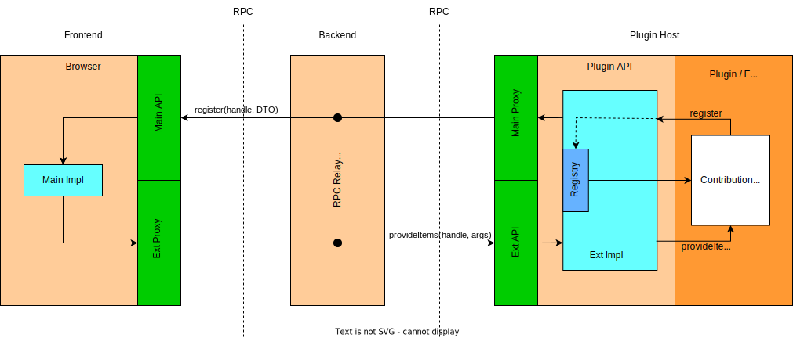

Plugin-API
Theia Plugin API and VS Code extensions support
Eclipse Theia is designed for extensibility. Therefore, it supports three extension mechanisms: VS Code extensions, Theia extensions, and Theia plugins. In the following, we focus on the mechanics of Theia plugins and Theia’s compatibility with the VS Code Extension API in order to support running VS Code extensions in Theia. This documentation aims to support developers extending Theia’s plugin API to either enhance the extensibility of Theia via plugins and/or increase Theia’s coverage of the VS Code Extension API – and with that the number of VS Code extensions that can be used in Theia.
Theia plugins, as well as VS Code extensions, can be installed and removed from a Theia installation at runtime. There are three kinds of plugins that address different extensibility use cases:
- VS Code plugins may extend many different user-facing capabilities of Theia, such as theming, language support, debuggers, tree views, etc., via a clearly defined API. In the context of VS Code itself these are called "extensions", not to be confused with build-time Theia extensions.
- Theia plugins are a superset of VS Code plugins using a largely compatible API with some additional capabilities not applicable to VS Code
- Headless plugins address application-specific extension points. They do not extend the user-facing capabilities of Theia as the other two categories of plugins do, but support application-specific services that, in turn, often do. More information about headless plugins is detailed below.
A plugin runs inside a "host process". This is a subprocess spawned by Theia's backend to isolate the plugin from the main process. This encapsulates the plugin to prevent it from arbitrarily accessing Theia services and potentially harm performance or functionality of Theia’s main functionality. Instead, a plugin accesses Theia’s state and services via the plugin API, if any, provided within its host process.
Theia’s plugin API strives to be a superset of VS Code’s extension API to enable running VS Code extensions as Theia plugins. For many cases this already works well. A report on API compatibility is generated daily in the vscode-theia-comparator repository. Please note that the report only checks the API on an interface level – and not the compatibility of the interfaces’ implementation behaviour. To be sure that an extension is fully supported, it is recommended to test it yourself. Feel free to open new issues for missing or incomplete API and link them in the report via a pull request. The report can be found here:

Relevant Theia source code
- plugin: Contains the API declaration of the theia plugin namespace.
- plugin-ext: Contains both the mechanisms for running plugins and providing them with an API namespace and the implementation of the ‘theia’ plugin API.
- plugin-ext-vscode: Contains an implementation of the VS Code plugin API. Since VS Code and Theia APIs are largely compatible, the initialization passes on the Theia plugin API and overrides a few members in the API object to be compatible to VS Code extensions (see plugin-ext-vscode/src/node/plugin-vscode-init.ts).
- plugin-ext-headless: Contains the mechanism for running "headless" plugins in a dedicated backend plugin host process.
API definition and exposure
The plugin API is declared in the plugin package in file theia.d.ts.
The implementation of the API defined in the plugin package is passed to a plugin by manipulating the module loading mechanism in plugin containers to construct an API module object.
This enables Theia plugins to import the API via the @theia/plugin module in node or via the theia namespace in web workers.
For VS Code plugins, the same API is available via the vscode namespace as expected by them.
Plugin containers are node processes (see plugin-ext/src/hosted/node/plugin-host.ts)and web workers (plugin-ext/src/hosted/browser/worker/worker-main.ts). These expose the API in the following places:
- Browser: assign API object to
window['theia']in plugin-ext/src/hosted/browser/worker/worker-main.ts. - Back-end/Node: Override module loading for Theia plugins in plugin-ext/src/hosted/node/scanners/backend-init-theia.ts and for VS Code plugins in plugin-ext-vscode/src/node/plugin-vscode-init.ts.
Note that it is not necessary to adapt these for implementing new plugin API.
Communication between plugin API and Theia
As the plugin runs in a separate process, the plugin API cannot directly communicate with Theia. Instead, the plugin process and Theia’s main process communicate via RPC.
For VS Code plugins and Theia plugins, the following "Main-Ext" pattern is used. There is one instance of the plugin host process for each connected frontend.

Ext refers to the code running on the plugin side inside the isolated host process.
Therefore, this code cannot directly use any Theia services (e.g. via dependency injection).
Main refers to code running inside the Theia frontend in the browser context.
Therefore, it can access any Theia service just like a build time Theia extension.
As the plugin hosts for VS Code plugins are scoped per frontend connection and the Main side resides in the browser, there is actually an indirection of the RPC communication channel via the Theia backend.
This simply relays the messages in both directions as depicted in the diagram.
For headless plugins, "Main-Ext" pattern is very similar, except that there is only one instance of the plugin host and the Main code runs in the node context, as there is no associated frontend context for headless plugins.

As the lifecycle of a plugin starts inside its process on the Ext side, anything that the plugin needs from Theia (e.g. state, command execution, access to services) has to be invoked over RPC via an implementation on the Main side.
In the inverse direction, the same is true for code that runs on the Main side and that needs something from the plugin side (e.g. changing plugin state after a user input).
It needs to be invoked over RPC via an implementation on the Ext side.
Therefore, Main and Ext interfaces usually come in pairs (e.g. LanguagesExt and LanguagesMain).
To communicate with each other, the implementation of each side of the API - Main and Ext - has an RPC proxy of its corresponding counterpart.
The proxy is based on the interface of the other side: Main implementation has a proxy of the Ext interface and vice versa.
The implementations do not have explicit dependencies to each other.
Encoding and Decoding RPC Messages
The communication between each side of the API is governed by proxies that use an RpcProtocol on a given channel to transmit RPC messages such as requests and notifications.
In Theia, the encoding and decoding process of RPC messages can be customized through dedicated RpcMessageEncoder and RpcMessageDecoder classes that can be provided when a new RpcProtocol is created.
The RpcMessageEncoder writes RPC messages to a buffer whereas the RpcMessageDecoder parses a binary message from a buffer into a RPC message.
By default, Theia uses an encoder and decoder based on msgpackr that already properly handles many JavaScript built-in types, such as arrays and maps.
We can separately extend the encoding and decoding of our own classes by installing extensions using the MsgPackExtensionManager singleton, accessible from both ends of the channel.
Examples of this can be found in the extension for Errors and the extension for URI, Range and other classes.
We call the registration of these extensions in index.ts to ensure they are available early on.
Please note that msgpackr always registers extensions globally so the extensions leak into all connections within Theia, i.e., also non-API related areas such as the frontend-backend connection.
And while the number of custom extensions is limited to 100, checking the extensions for every single message may impact performance if there are many extensions or the conversion is very expensive.
Another hurdle is that we need to ensure that we always detect the correct type of object purely from the object shape which may prove difficult if there are hundreds of objects and custom instances from user code.
Consequently, we mainly use the msgpackr extension mechanism for very few common classes but rely on custom data transfer objects (DTOs) for the Theia plugin API, see also Complex objects and RPC.
Adding new API
This section gives an introduction to extending Theia’s plugin API. If you want to add a complete custom plugin API in your own extension, see this readme.
For adding new API, the first step is to declare it in the theia.d.ts file in the plugin package.
In a second step, the implementation for the new API must be made available in the returned object of the API factory in plugin-context.ts.
Typically, functions or properties returned by the API factory delegate to an Ext implementation that actually provides the functionality.
See the following shortened and commented excerpt from plugin-context.ts#createAPIFactory:
// Creates the API factory used to create the API object for each plugin
// Implementations handed into this are shared between plugins
export function createAPIFactory(
rpc: RPCProtocol,
pluginManager: PluginManager,
envExt: EnvExtImpl,
debugExt: DebugExtImpl,
preferenceRegistryExt: PreferenceRegistryExtImpl,
editorsAndDocumentsExt: EditorsAndDocumentsExtImpl,
workspaceExt: WorkspaceExtImpl,
messageRegistryExt: MessageRegistryExt,
clipboard: ClipboardExt,
webviewExt: WebviewsExtImpl
): PluginAPIFactory {
// Instantiation of Ext services.
// Instantiate and register with RPC so that it will be called when the main side uses its proxy.
const authenticationExt = rpc.set(MAIN_RPC_CONTEXT.AUTHENTICATION_EXT, new AuthenticationExtImpl(rpc));
const commandRegistry = rpc.set(MAIN_RPC_CONTEXT.COMMAND_REGISTRY_EXT, new CommandRegistryImpl(rpc));
// [...]
// The returned function is used to create an instance of the plugin API for a plugin.
return function (plugin: InternalPlugin): typeof theia {
const authentication: typeof theia.authentication = {
// [...]
};
// [...]
// Here the API is returned. Add members of the root namespace directly to the returned object.
// Each namespace is contained in its own property.
return <typeof theia>{
version: require('../../package.json').version,
// The authentication namespace
authentication,
// [...]
// Types
StatusBarAlignment: StatusBarAlignment,
Disposable: Disposable,
EventEmitter: Emitter,
CancellationTokenSource: CancellationTokenSource,
// [...]
};
};
}
Adding new Ext and Main interfaces with implementations
Ext and Main interfaces only contain the functions called over RPC.
Further functions are just part of the implementations.
Functions to be called over RPC must start with $, e.g. $executeStuff.
- Define
ExtandMaininterfaces in plugin-ext/src/common/plugin-api-rpc.ts. The interfaces should be suffixed withExtandMaincorrespondingly (e.g.LanguagesMainandLanguagesExt). - In plugin-ext/src/common/plugin-api-rpc.ts, add a proxy identifier for the
Extinterface toMAIN_RPC_CONTEXTand one for theMaininterface toPLUGIN_RPC_CONTEXT - Create the
Extimplementation in folder plugin-ext/src/plugin. - Create the
Mainimplementation in folder plugin-ext/src/main/browser. - To communicate via RPC, each implementation has a proxy depending on the interface on the other side.
For instance, see
LanguagesExtImplin plugin-ext/src/plugin/languages.ts andLanguagesMainImplin plugin-ext/src/main/browser/languages-main.ts. They each create the proxy to the other side in their constructors by using the proxy identifiers.
Complex objects and RPC
When encoding and decoding RPC messages pure DTO objects that only carry properties can always be transmitted safely. However, due to the necessary serialization process, functions and references to other objects can never be transmitted safely.
If functions of objects need to be invoked on the opposite side of their creation, the object needs to be cached on the creation side.
The other side receives a handle (usually an id) that can be used to invoke the functionality on the creation side.
As all cached objects are kept in memory, they should be disposed of when they are no longer needed.
For instance, in LanguagesExtImpl#registerCodeActionsProvider a new code action provider is created and cached on the Ext side and then registered on the Main side via its handle.
When the code action provider’s methods are later invoked on the Main side (e.g. in LanguagesMainImpl#provideCodeActions), it calls the Ext side with this handle.
The Ext side then gets the cached object, executes appropriate functions and returns the results back to the Main side (e.g. in LanguagesExtImpl#$provideCodeActions).
Another example to browse are the TaskExtImpl and TaskMainImpl classes.
To ensure correct type conversion between the Theia backend and the plugin host we define an API protocol based on types and DTOs that can be transmitted safely.
The plugin API and its types are defined in plugin-ext/src/common/plugin-api-rpc.ts with some additional conversion on the Ext side being defined in plugin-ext/src/plugin/type-converters.ts.
Thus, this is also a good starting point to look for conversion utilities for existing types.
Adding new types
New classes and other types such as enums are usually implemented in plugin-ext/src/plugin/types-impl.ts. They can be added there and then we can add them to the API object created in the API factory.
Headless Plugins
The majority of plugin use cases are for extension of the Theia user experience via the VS Code compatible API provided by Theia.
These plugins use either the vscode API object if they use the "vscode" engine type in their package manifests or else the theia object if they use the "theiaPlugin" engine.
The lifecycle of these kinds of plugins is bound to frontend connections: for each connected frontend, the Theia backend spawns a plugin host host process dedicated to it in which these plugins are loaded and activated (as applicable to their declared activation events).
In the plugin host for a frontend connection these plugins have access to Theia services as discussed above, isolated from the main Theia backend process and from all of the other instances of the same plugin running in plugin hosts for all other frontend connections.
Headless plugins, by contrast, are quite different in most respects:
- They are encapsulated in a single plugin host process in the backend, separate from all frontend-connection plugin hosts. This host is spun up only if there are any headless plugins to run in it.
- Theia does not export any default API object, analogous to
vscodeortheiafor other plugins, as Theia itself defines no use cases for headless plugins. Such use cases are entirely defined by the Theia-based application's requirements and reflected in its custom APIs defined as described in this how-to document. - Theia supports neither any contribution points for headless plugins nor any non-trivial activation events (only
'*'and'onStartupFinished'). This is a corollary of the use cases being entirely application-specific: the application needs to define its own contribution points and activation events. Currently this requires an application to enumerate the available deployed plugins via the HostedPluginServer to parse their package manifests to extract application-specific contribution points and activation events, and to activate plugins via the PluginManager::activatePlugin(pluginId) API on the appropriate triggers.
Thus, headless plugins are best suited to the contribution of third-party extensions of a Theia application's custom backend services, where those service are shared by all connected frontends or serve some kind of headless scenario like a CLI.
A headless plugin may be restricted to only the headless deployment, in which case it may make this explicit by declaring the "theiaHeadlessPlugin" engine in its package manifest.
Alternatively, a VS Code or Theia plugin that extends the frontend user experience may also contribute a headless entrypoint for a headless deployment by identifying such entrypoint script in the "headless" property of the "theiaPlugin" object in its package manifest in addition to the "main" entrypoint (for VS Code plugins) or the "theiaPlugin.backend" entrypoint (for Theia plugins).
The only API namespaces that are available to headless plugins are those custom APIs that are contributed by the application's custom build-time Theia extensions or by other headless plugins via the return results of their activate() functions.
For details of how to contribute custom API, see the pertinent documentation.
Dependency Injection
Both the Main and the Ext sides of the plugin API are configured using InversifyJS dependency injection.
On the Main side, the usual mechanism is used to bind implementations of the API objects, consisting of ContainerModules registered in package.json and loaded at start-up into Theia's Inversify Container by a generated script.
On the Ext side, the plugin host initialization script creates and configures its Inversify Container.
You are encouraged to leverage this dependency injection in the definition of new API objects and the maintenance of existing ones, to promote reuse and substitutability of the various interface implementations.
Additional Links
Talk by Thomas Maeder on writing plugin API: https://www.youtube.com/watch?v=Z_65jy8_9SM
Adding a new custom plugin API outside of Theia plugin API: how-to-add-new-custom-plugin-api.md
Theia Plugin Implementation wiki page: https://github.com/eclipse-theia/theia/wiki/Theia-Plugin-Implementation
Writing Plugin API wiki page in the che wiki: https://github.com/eclipse/che/wiki/Writing-Theia-plugin-API
Theia versus VS Code API Comparator: https://github.com/eclipse-theia/vscode-theia-comparator
Theia's extension mechanisms: VS Code extensions, Theia extensions, and Theia plugins: https://theia-ide.org/docs/extensions
Example of creating a custom namespace API and using in VS Code extensions: https://github.com/thegecko/vscode-theia-extension
Example of a Theia extension defining a custom namespace API and a headless plugin that uses it: Greeting-of-the-Day API Provider Sample and Greeting-of-the-Day Client Sample Plugin